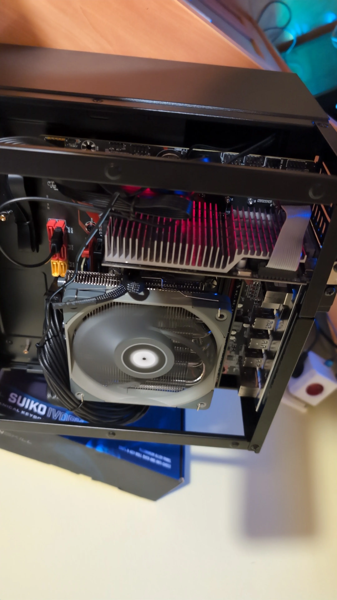
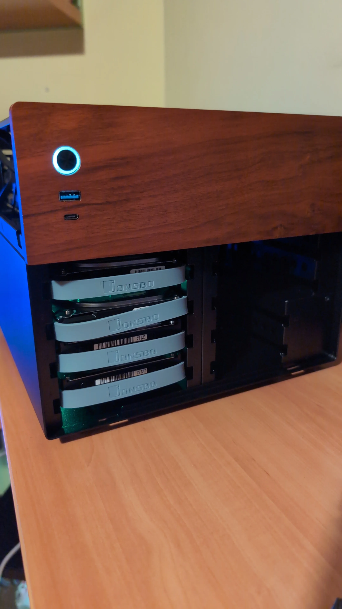
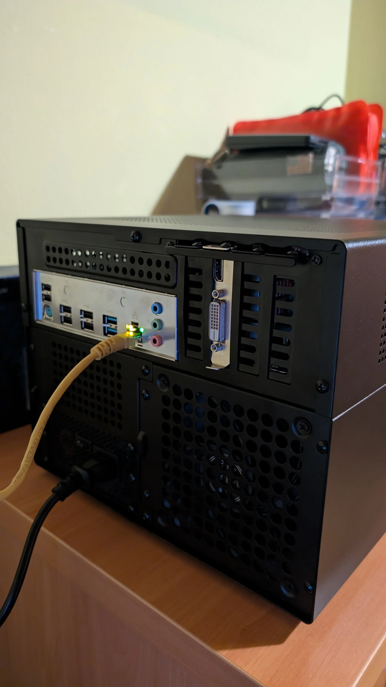
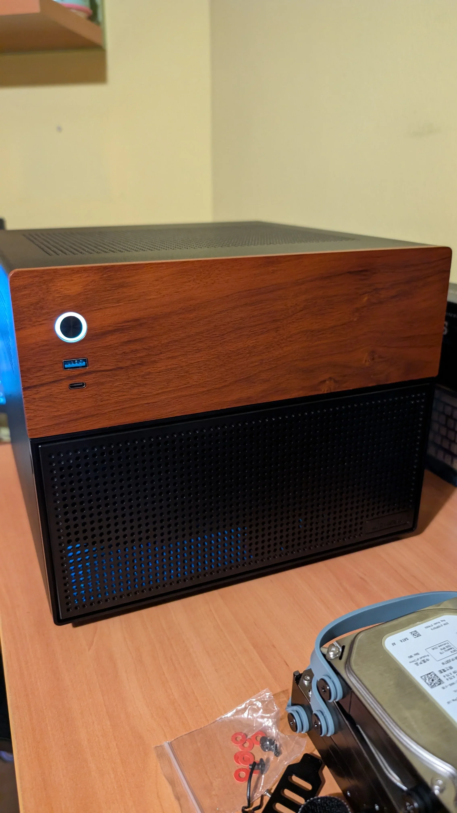
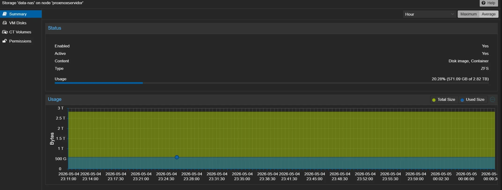
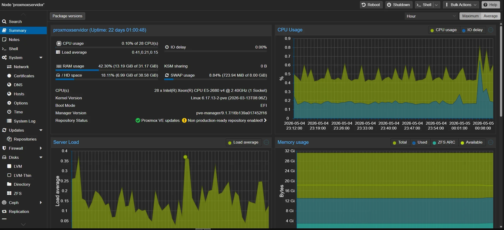

Homelab
He decidido montar mi propio homelab como un entorno dedicado a la experimentación y el aprendizaje en ciberseguridad, desarrollo y administración de sistemas.
Motivación
Un homelab es una herramienta fundamental para cualquier persona apasionada por la ciberseguridad y la administración de sistemas. Me permite probar nuevas tecnologías, practicar técnicas de hacking ético, configurar servicios y perfeccionar mis habilidades en un entorno seguro y controlado, eliminando el riesgo de afectar sistemas en producción.
Hardware
El núcleo de mi laboratorio está construido con componentes cuidadosamente seleccionados para ofrecer un rendimiento óptimo:
- Chasis: Jonsbo N4 - un diseño compacto pero con excelente capacidad.
- Procesador: Intel Xeon E5 2680 V4 - 14 núcleos y 28 hilos, ideal para cargas intensivas de virtualización.
- Memoria: 32GB RAM ECC DDR4 - fundamental para garantizar la estabilidad del sistema y la integridad de los datos.
- Placa Base: X99 Machinist - excelente soporte para expansión y múltiples recursos.
- GPU: NVIDIA GT 710 - dedicada exclusivamente a la salida de vídeo.
{kind=link}

{kind=link}

{kind=link}

Esta configuración me proporciona la potencia necesaria para ejecutar múltiples máquinas virtuales y contenedores de forma simultánea, sin sufrir degradación en el rendimiento. El procesador Xeon E5 resulta una pieza clave para manejar estas exigentes cargas de trabajo.

Virtualización con Proxmox VE
Como hipervisor utilizo Proxmox VE, una potente plataforma de virtualización de código abierto basada en KVM. Proxmox me facilita:
- Crear y administrar máquinas virtuales complejas basadas en Linux.
- Ejecutar contenedores LXC para aplicaciones que requieren menos recursos.
- Programar snapshots y copias de seguridad de forma automática.
- Migrar máquinas virtuales en caliente sin tiempo de inactividad (downtime).
Servicios y Aplicaciones
Tengo ahora mismo estos servicios importantes montados de cara al uso y análisis de red/servidor:
- Nginx: Proxy inverso y balanceador de carga que enruta el tráfico hacia mis aplicaciones.
- AdGuard Home: Servidor DNS que bloquea rastreadores y anuncios en toda mi red doméstica.
- Dockge: Panel de control intuitivo para gestionar mis contenedores y stacks de docker-compose.
- Gitea: Servidor Git autoalojado para llevar el control de versiones de forma privada y paralela a GitHub.
- Uptime Kuma: Herramienta de monitorización para verificar el estado y la disponibilidad de mis servicios.
- Glances: Dashboard que muestra las estadísticas y el consumo de recursos del servidor en tiempo real.
- Scrutiny: Monitorización de los datos SMART de mis discos duros para anticiparme a posibles fallos.
Almacenamiento
El almacenamiento es un pilar crítico para que el homelab sea seguro y funcional. Para ello, he configurado:
- RAID ZFS: 4 discos de 1TB en configuración RAID-Z1, asegurando tolerancia a fallos.
- Capacidad Total: 4TB de almacenamiento crudo, optimizado para backups, datos y multimedia con redundancia.
- Snapshots ZFS: Protección instantánea contra borrados accidentales, ransomware o corrupción de datos.
- Automatización: Tareas programadas para el respaldo de máquinas virtuales e información crítica.

Automatización y Scripts
La automatización resulta clave para minimizar el trabajo manual y evitar tareas repetitivas:
- Scripts de Bash personalizados para agilizar la administración diaria.
- Uso intensivo de docker-compose para garantizar despliegues consistentes y reproducibles.
- Copias de seguridad desatendidas para proteger configuraciones y máquinas virtuales.
- Sistemas de alerta que me notifican automáticamente si algún servicio presenta problemas.
Experiencia de Aprendizaje
Este homelab va mucho más allá de ser una simple infraestructura; es un laboratorio vivo en el que sigo aprendiendo día a día:
- Administración avanzada de sistemas Linux en escenarios realistas.
- Virtualización y orquestación de contenedores empleando Proxmox y Docker.
- Aplicación de medidas de seguridad (hardening) y buenas prácticas en redes.
- Gestión de infraestructura como código mediante automatización y scripting.
- Despliegue de proyectos de desarrollo simulando entornos de producción reales.

Objetivos Principales
El propósito fundamental de este proyecto es alcanzar una mayor independencia y tener un control absoluto sobre mi propia tecnología:
- Independencia digital: Reducir la dependencia de servicios de terceros y gigantes tecnológicos.
- Autoalojamiento: Mantener mis propios servicios, datos y proyectos bajo mi propio techo.
- Experimentación: Tener la libertad de "romper" y arreglar sistemas para entender a fondo nuevas tecnologías.
- Ciberseguridad: Contar con un entorno legal y seguro para practicar tácticas de seguridad ofensiva y defensiva.
- Desarrollo de Proyectos: Disponer de un ecosistema real para programar, testear y publicar aplicaciones.
- Infraestructura de Calidad: Sentar unas bases sólidas en cuanto a hardware, redes y arquitectura de software.
Próximos Pasos
Tengo planes bastante ambiciosos para seguir ampliando y mejorando este laboratorio:
- Ampliar la capacidad de almacenamiento incorporando más discos al pool de ZFS.
- Configurar un entorno aislado específico para el análisis de malware y pruebas de penetración.
- Implementar alta disponibilidad (HA) y redundancia a nivel de red y servicios.
- Documentar todo este proceso compartiendo guías técnicas detalladas en el blog.
Conclusión
Este homelab representa mi compromiso con la soberanía digital y el aprendizaje continuo. No es simplemente un montón de hardware y cables, sino un entorno dinámico donde puedo investigar, equivocarme y construir sin restricciones. Gracias a tecnologías como Proxmox, Docker y Gitea, ahora tengo el control total de mi infraestructura.
Si buscas una forma práctica y real de potenciar tus conocimientos en sistemas, ciberseguridad o desarrollo de software, te recomiendo encarecidamente que montes tu propio homelab. La inversión de tiempo se recupera con beneficios técnicos inmediatos y duraderos.
¿Tú también estás construyendo tu propio homelab? ¿Utilizas un stack de herramientas similar? ¡Cuéntame tu experiencia en los comentarios!
Comentarios